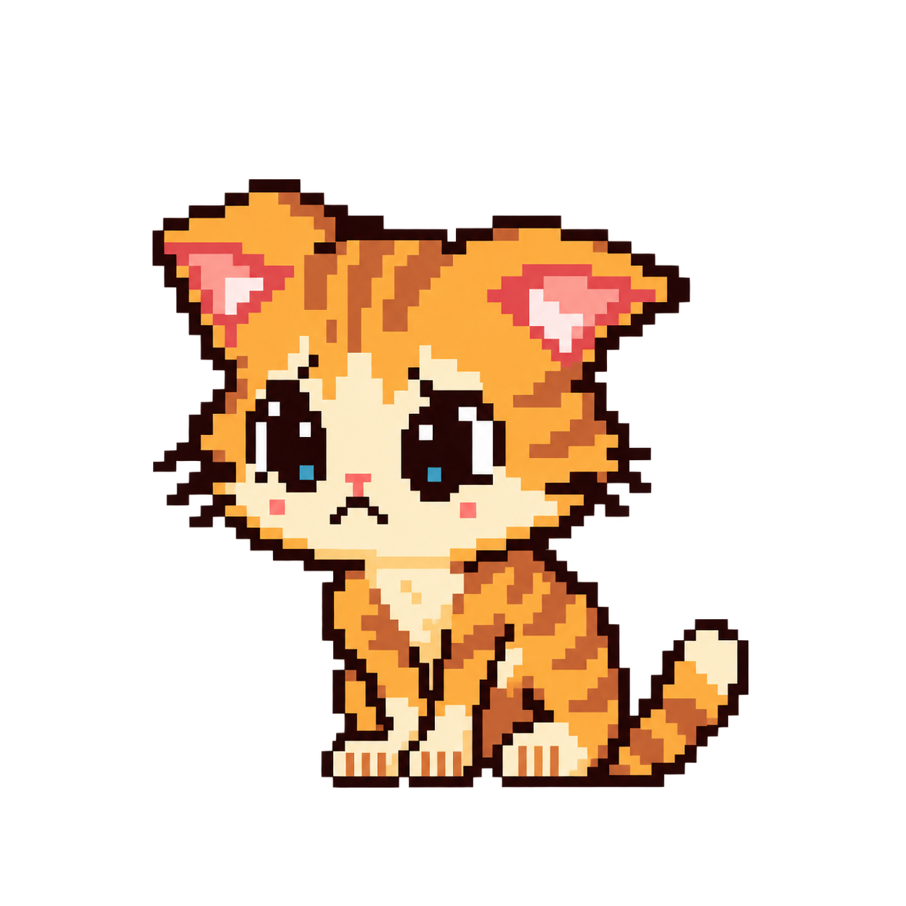

* CAT opened the character screen.
* SCHOOL PERFORMANCE has expanded to occupy most of the interface.
* The number is real.
* The screen layout is ridiculous.
* CAT opened the character screen.
* SCHOOL PERFORMANCE has expanded to occupy most of the interface.
* The number is real.
* The screen layout is ridiculous.

School performance stayed on the character screen. It still matters to Cat.
It just went back into the SCHOOL box.
People, interests, needs, play, memories, values, and the rest of a life did not need scores in order to exist.
One number changed size on the screen. Cat did not.
LIFE 09 ACCOUNTED FOR.
ENCOUNTER COMPLETE.
RETURN TO MAP